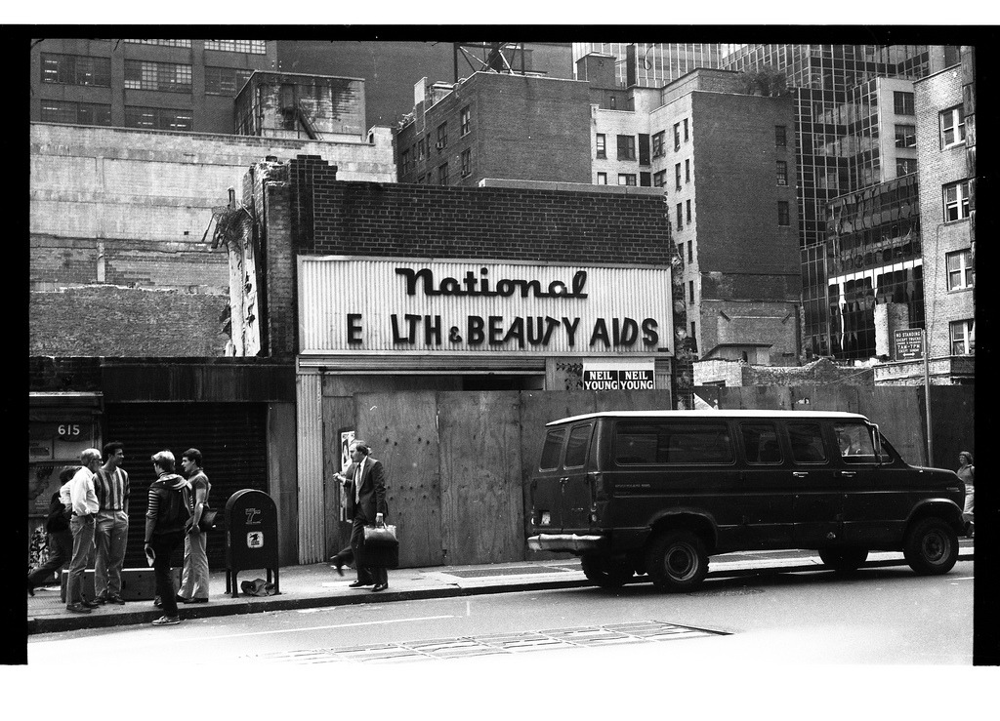

79th and Broadway on a snowy day, 1970s
79th and Broadway on a snowy day, 1970s
Whelan Drug, Broadway and 110th, 1977
First of all -- super thanks for a collection of super fotos of NYC ! Just curious if there is some way to find some fotos of The Party Cake on 89th + Broadway. I think it closed around 1987 or 1988
Thanks
I’ve only ever run across two:
https://nycnostalgia.tumblr.com/post/86996929163/broadway-and-89th-in-1977-the-new-yorker
https://nycnostalgia.tumblr.com/post/77373995780/broadway-and-89th-street-1971-home-sweet-home
Loved that place!

Fillmore East, 1970
Marathon in Central Park, 1982
Park Avenue, 1979

On West Street looking at the WTC, 1980s

Pedestrians blatantly disregarding the “No Standing” sign

Intrepid explorers in Central Park, 1970

July 1964. New York. Man walking in front of construction worker driving asphalt paver
Angelo Rizzuto
Cartoon death in 3, 2, 1,…

Second Avenue at 14th St, 1976
I love this photo so hard

‘sup
Child actor Mason Reese outside the NY Public Library, 1977
Huh. Maybe he just watched “The Warriors”.

Subway Kiss, 1987 by Richard Sandler

George Washington Bridge in the 70s.

Outside FAO Schwarz, 1973

Your limousine awaits, sir.

Orchard Street, 1981
Samesies, 1979
South Street, 1974

That bike probably weighed 50 pounds. 6th Ave, 1970s.

The Cock Wagon. Brooklyn 1950s
Broome and West Broadway, 1974
Near the United Nations, 1979

615 4th Avenue, Greenwood Heights Brooklyn, 1979

She’ll fuck you up.
Crack Kills. Avenue B, 1980.

Prom on the roof. 106th and Amsterdam, 1984.

Henry Street, 1980
Minor car issues. 87th off Central Park West, 1969

Houston and Clinton, 1982
Stillwell Avenue in Brooklyn, 1978
Avenue A at 13th Street, around 1980

1974 in the Bronx, at Valentine Ave and E. Fordham Rd

1980s Manhattan. Would you go here for your health and beauty needs?
86th Street, looking south down Broadway, 1970

Cracked ribs, only 15 cents!

The 1 train at Dyckman Street in Inwood
Tom’s Luncheonette, Cobble Hill, Brooklyn, 1970s

Bird photobombing the Empire State Building, around 1970

60s, man.
3rd and MacDougal, 1967
Salmonella, only 65 cents!

Escape artist or fashion maven? Washington Square Park, 1985

Rainy, blue New York, 1967. (via lostinhistory)

Beat up bus on Central Park West at 72nd, 1981
Harlem cookout 70s style
Joe DiMaggio is much happier than this couple.

Ah, the old romantic garbage can make-out session!
Second Avenue at 14th St, 1976